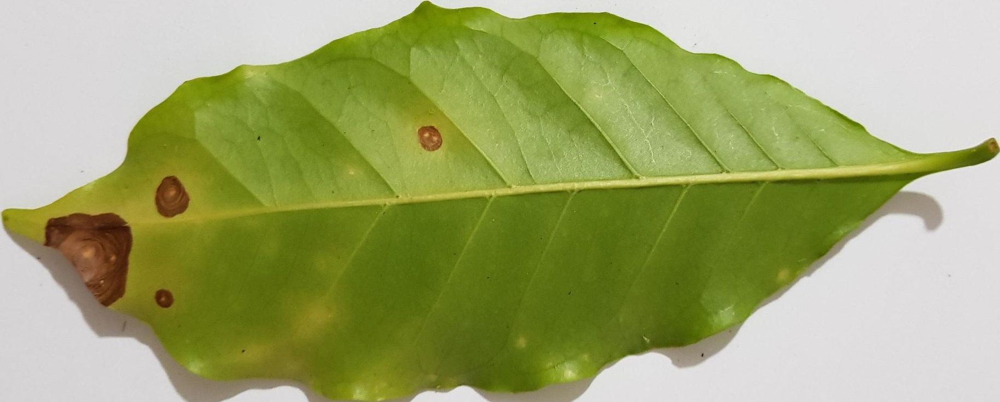

Aplikasi ini dibuat untuk memudahkan petani kopi dalam mendiagnosa hama tanaman kopi yang menyerang tanaman kopi mereka. Aplikasi ini juga memberikan informasi tentang hama tanaman kopi yang menyerang tanaman kopi dan cara mengatasinya.
Cara Menggunakan Aplikasi
-
Login menggunakan akun yang sudah terdaftar. Jika belum memiliki akun, dapat mendaftar di halaman registrasi. Setelah login akan diarahkan ke halaman dashboard.
-
Foto daun tanaman kopi yang ingin di diagnosa hama tanaman kopi. Pastikan foto yang diambil memiliki kualitas yang baik agar hasil diagnosa lebih akurat. Berikut adalah contoh gambar yang memiliki kualitas baik. Perhatikan bahwa gambar hanya mengandung 1 daun dan gambar memiliki background polos. Hal ini penting agar sistem dapat memproses gambar dengan baik.

Contoh 1 : Cercospora
-
Pindah foto ke perangkat ini untuk nantinya di upload ke sistem.
-
Di halaman dashboard terdapat kotak berwarna putih dan tertulis judul "Prediksi Penyakit". Dibawah tulisan "upload image", silahkan klik tombol "Choose File". Halaman pop up akan muncul dan silahkan pilih gambar yang ingin di diagnosa.
-
Setelah gambar terupload, klik tombol "Diagnosa". Sistem akan memproses gambar yang diupload dan menampilkan hasil diagnosa.
-
Ketika selesai diagnosa, sistem akan menampilkan hasil diagnosa dan informasi tentang hama tanaman kopi yang menyerang tanaman kopi. Hasil diagnosa ada di bagian bawah dari halaman dashboard. Di kotak dengan judul "Riwayat Prediksi" akan menampilkan hasil diagnosa yang sudah dilakukan sebelumnya. Dan pada tabel paling atas, akan menampilkan hasil diagnosa yang baru saja dilakukan.
-
Jika ingin melihat informasi lebih lanjut tentang hama tanaman kopi yang menyerang tanaman kopi, silahkan klik tombol "Detail" pada hasil diagnosa yang ingin dilihat informasi lebih lanjutnya. Ketika di klik, akan muncul halaman pop up yang berisi informasi tentang hama tanaman kopi yang menyerang tanaman kopi dan cara mengatasinya beserta dengan waktu diagnosa dilakukan.